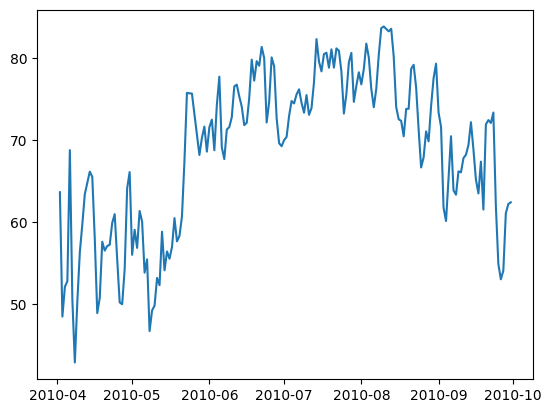

import pandas as pd
import numpy as np
import matplotlib.pyplot as plt
import seaborn as sns
import datetime
import geopandas as gpd
pd.set_option('display.max_columns', None)## read json
import json
with open('/Users/sagunkarki/Desktop/mitralab/POWERDataset/data/data_generated/temperature_fromPOWER/55119.json') as f:
data = json.load(f)df= pd.read_parquet('/Users/sagunkarki/Desktop/mitralab/POWERDataset/data/data_generated/yearly_temperature/temperature_2010.parquet')hrs = ['00:00:00', '01:00:00', '02:00:00', '03:00:00', '04:00:00',
'05:00:00', '06:00:00', '07:00:00', '08:00:00', '09:00:00', '10:00:00',
'11:00:00', '12:00:00', '13:00:00', '14:00:00', '15:00:00', '16:00:00',
'17:00:00', '18:00:00', '19:00:00', '20:00:00', '21:00:00', '22:00:00',
'23:00:00']
df['Avg'] = df[hrs].mean(axis=1)
df.drop(hrs, axis=1, inplace=True)
## convert to farhenheit
df['Avg'] = df['Avg']*9/5 + 32df['FIPS'] = df['FIPS'].astype(int)
df['date'] = pd.to_datetime(df['date'])
df.dtypesdate datetime64[ns]
FIPS int64
Avg float64
dtype: objectdf| date | FIPS | Avg | |
|---|---|---|---|
| 0 | 2010-01-01 | 19159 | 2.67650 |
| 1 | 2010-01-02 | 19159 | -7.39600 |
| 2 | 2010-01-03 | 19159 | 1.42925 |
| 3 | 2010-01-04 | 19159 | -8.41000 |
| 4 | 2010-01-05 | 19159 | -7.90825 |
| ... | ... | ... | ... |
| 385070 | 2010-12-27 | 19157 | 13.18925 |
| 385071 | 2010-12-28 | 19157 | 20.48450 |
| 385072 | 2010-12-29 | 19157 | 27.58475 |
| 385073 | 2010-12-30 | 19157 | 39.56825 |
| 385074 | 2010-12-31 | 19157 | 33.04475 |
385075 rows × 3 columns
df_us_counties = pd.read_csv("/Users/sagunkarki/Desktop/mitralab/POWERDataset/data/data_generated/midwest_counties_centroid/midwest_counties_centroid.csv")df_us_counties.dtypesNAME object
STATE_NAME object
FIPS int64
lat float64
lon float64
dtype: objectstart_date = '2010-04-01'
end_date = '2010-10-01'
start_date = datetime.datetime.strptime(start_date, '%Y-%m-%d')
end_date = datetime.datetime.strptime(end_date, '%Y-%m-%d')df = df[df['date'] < end_date]
df = df[df['date'] > start_date]df_merged = pd.merge(df, df_us_counties, left_on='FIPS', right_on='FIPS')df_merged.to_csv('test.csv')df_merged| date | FIPS | Avg | NAME | STATE_NAME | lat | lon | |
|---|---|---|---|---|---|---|---|
| 0 | 2010-04-02 | 19159 | 63.66350 | Ringgold County | Iowa | 40.735410 | -94.243979 |
| 1 | 2010-04-03 | 19159 | 48.48275 | Ringgold County | Iowa | 40.735410 | -94.243979 |
| 2 | 2010-04-04 | 19159 | 52.12025 | Ringgold County | Iowa | 40.735410 | -94.243979 |
| 3 | 2010-04-05 | 19159 | 52.80575 | Ringgold County | Iowa | 40.735410 | -94.243979 |
| 4 | 2010-04-06 | 19159 | 68.80025 | Ringgold County | Iowa | 40.735410 | -94.243979 |
| ... | ... | ... | ... | ... | ... | ... | ... |
| 192005 | 2010-09-26 | 19157 | 51.26075 | Poweshiek County | Iowa | 41.686691 | -92.531478 |
| 192006 | 2010-09-27 | 19157 | 52.37075 | Poweshiek County | Iowa | 41.686691 | -92.531478 |
| 192007 | 2010-09-28 | 19157 | 59.50925 | Poweshiek County | Iowa | 41.686691 | -92.531478 |
| 192008 | 2010-09-29 | 19157 | 60.17900 | Poweshiek County | Iowa | 41.686691 | -92.531478 |
| 192009 | 2010-09-30 | 19157 | 61.26425 | Poweshiek County | Iowa | 41.686691 | -92.531478 |
192010 rows × 7 columns
dfx = df_merged[df_merged['FIPS'] == 19159]
plt.plot(dfx['date'], dfx['Avg'])
import plotly.express as px
import pandas as pd
# Sample time series data for map (latitude, longitude, value, and date)
data = {
"date": df_merged['date'],
"latitude": df_merged['lat'],
"longitude": df_merged['lon'],
"value": df_merged['Avg']
}
df = pd.DataFrame(data)
# Create the time series map focusing on the US
fig = px.scatter_geo(df,
lat='latitude',
lon='longitude',
color='value',
animation_frame='date',
size='value',
hover_name='value',
scope='usa', # Focus on the United States
title='Time Series Map - US Focus')
# Show the map
fig.show()Unable to display output for mime type(s): application/vnd.plotly.v1+json